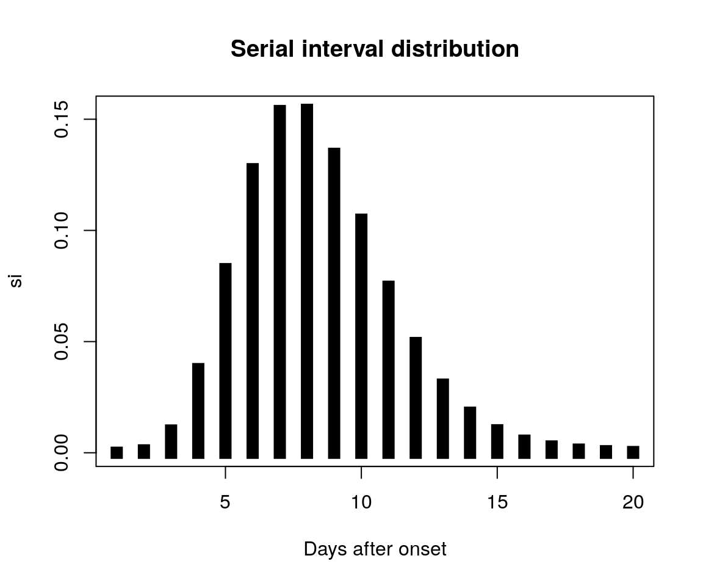
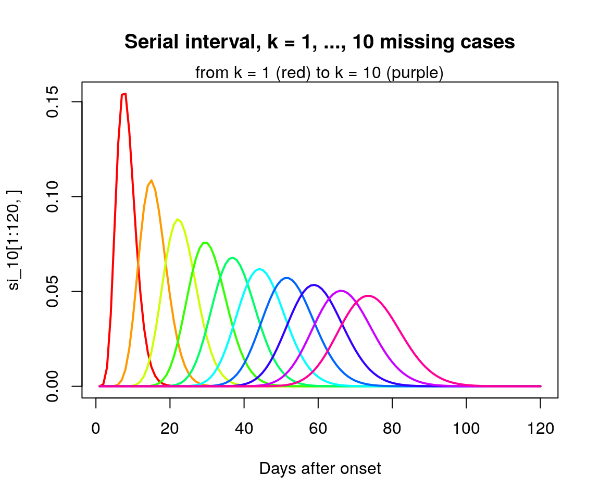
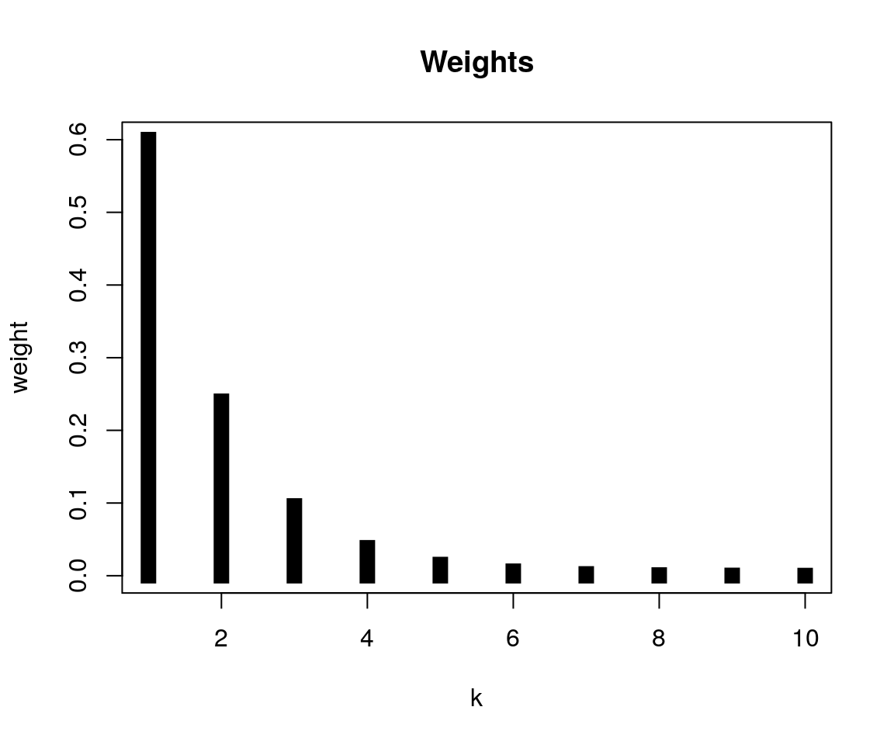
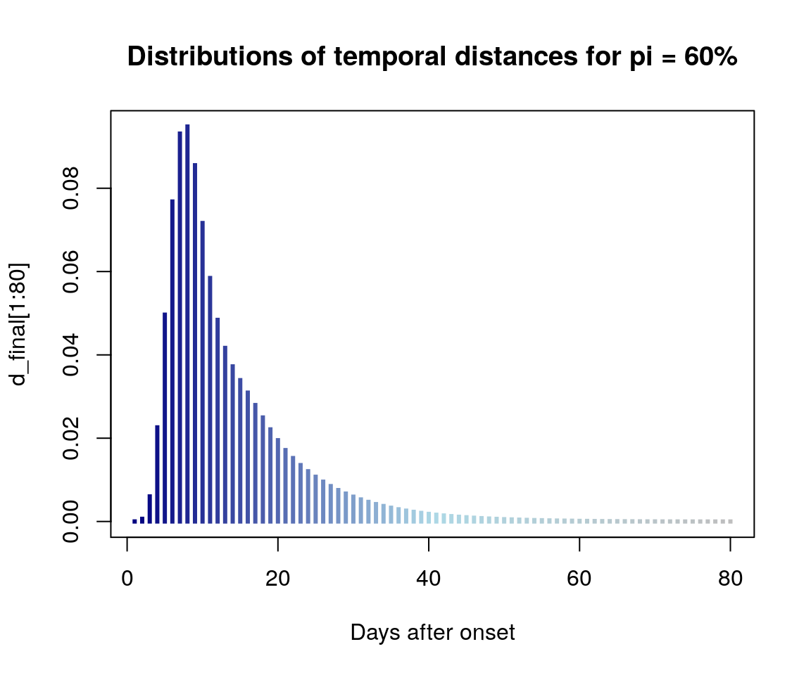

vimes uses reference distributions of (spatial, temporal, genetic) distances between pairs of cases on a transmission chain to define thresholds for the graph pruning algorithm. In such case, we asssume these distributions are known, typically from the literature. However, these distributions change when there are unobserved cases. In this vignette, we illustrate how the distribution of expected distances between cases is computed for a give reporting probability pi, and given a known distribution F(d).
Let us assume a simple probability mass function of, say, the serial interval. We simulate it using the package distcrete, from a discretised Gamma distribution with shape 10 and rate 1.5:
si <- distcrete::distcrete("gamma", 1L,
shape = 10,
rate = 1.2)$d(1:20)
plot(si, type = "h", lwd = 10, lend=2,
xlab = "Days after onset",
main = "Serial interval distribution")
This distribution assumes a single generation of infection between cases. Its general form for a number K of generations between cases is given by \(K\) convolutions of F(d). In vimes, these are internally computed by convolve_empirical. As the function is not exported, one needs to use:
si_10 <- vimes:::convolve_empirical(si, 10, TRUE)to obtain K=10 convolutions of the distribution (si); the last argument is to retain all intermediate convolutions for k=1, …, K.
head(si_10)
#> 1 2 3 4 5
#> [1,] 1.938717e-05 3.758623e-10 7.293147e-15 5.767392e-18 -1.156482e-18
#> [2,] 1.083100e-03 4.199648e-08 1.221299e-12 4.055198e-17 1.156482e-18
#> [3,] 1.002450e-02 1.561799e-06 7.953309e-11 2.942361e-15 5.782412e-19
#> [4,] 3.762795e-02 2.317407e-05 2.576001e-09 1.486062e-13 6.360653e-18
#> [5,] 8.260616e-02 1.852033e-04 4.595795e-08 4.524906e-12 2.781340e-16
#> [6,] 1.275300e-01 9.382892e-04 5.133773e-07 8.864759e-11 8.222011e-15
#> 6 7 8 9 10
#> [1,] 1.856531e-17 6.029729e-19 0.000000e+00 -3.227393e-19 -6.432861e-18
#> [2,] 2.136538e-17 -1.428539e-18 0.000000e+00 -6.454785e-19 -6.215242e-18
#> [3,] 2.102409e-17 -3.160518e-19 2.902544e-18 -2.743284e-18 -6.369372e-18
#> [4,] 2.212527e-17 -1.000544e-18 0.000000e+00 -1.290957e-18 -6.713617e-18
#> [5,] 2.298509e-17 1.666924e-18 5.805088e-18 -2.097805e-18 -6.282872e-18
#> [6,] 1.701349e-17 1.848692e-18 2.902544e-18 -8.875329e-19 -6.615095e-18
apply(si_10, 2, sum)
#> 1 2 3 4 5 6 7
#> 0.9997120 0.9994241 0.9991362 0.9988485 0.9985608 0.9982732 0.9979857
#> 8 9 10
#> 0.9976983 0.9974110 0.9971237
matplot(si_10[1:120,], type = "l", lty = 1, lwd = 2, col = rainbow(10),
xlab = "Days after onset",
main = "Serial interval, k = 1, ..., 10 missing cases")
mtext("from k = 1 (red) to k = 10 (purple)", 3)
In practice, we do not know the number of generations between two cases, so we cannot use any of the convolutions above directly. However, it is possible to integrate over all possible values of K. In practice, we will limit the convolutions to a maximum value of K so that p(k > K) < threshold, defaulting to 0.001. The resulting distribution is a linear combination of the convolutions, weighted by the likelihoods of the corresponding values of k. These weights are computed for a given reporting probability pi by, for instance:
w <- vimes:::get_weights(0.6, 10)
plot(w, type = "h", xlab = "k", ylab = "weight",
lwd = 10, lend = 2, main = "Weights")
for a reporting probability of 0.6 and a maximum value of k of 10. The final distribution combines the previous convolutions using these weights. This is achieved by the (exported) function dempiric:
d_final <- dempiric(si, 0.6)
head(d_final)
#> [1] 1.164337e-05 6.504836e-04 6.020754e-03 2.260365e-02 4.965499e-02
#> [6] 7.681575e-02
sum(d_final)
#> [1] 1
pal <- colorRampPalette(c("navy", "lightblue", "grey"))
plot(d_final[1:80], type = "h", lwd = 3, lend = 2,
col = pal(80), xlab = "Days after onset",
main = "Distributions of temporal distances for pi = 60%")